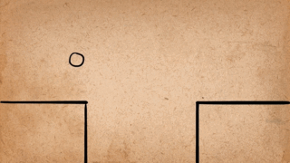

Staging
세 번째 법칙은 정면 액션과 포즈 투 포즈.입니다. 이 법칙은 애니메이션을 그리는 2가지 방식에 대해서 설명하는 챕터입니다.
2가지 방식
애니메이션은 Straight Ahead와 pose to pose방식이 존재합니다.
Straight Ahead방식
애니메이션에서 "Straight Ahead" 방식은 캐릭터의 움직임이나 장면을 순차적으로 그려나가는 기법입니다. 이 방법은 애니메이터가 각 프레임을 순서대로 그리면서 자연스러운 움직임을 만들어내는 데 도움을 줍니다.

pose to pose방식
애니메이션에서 "Pose to Pose" 방식은 주요 포즈(키 프레임)를 먼저 설정한 후, 그 사이의 중간 프레임을 채워 나가는 기법입니다. 이 방법은 애니메이션의 전체적인 흐름과 일관성을 유지하는 데 유리합니다.